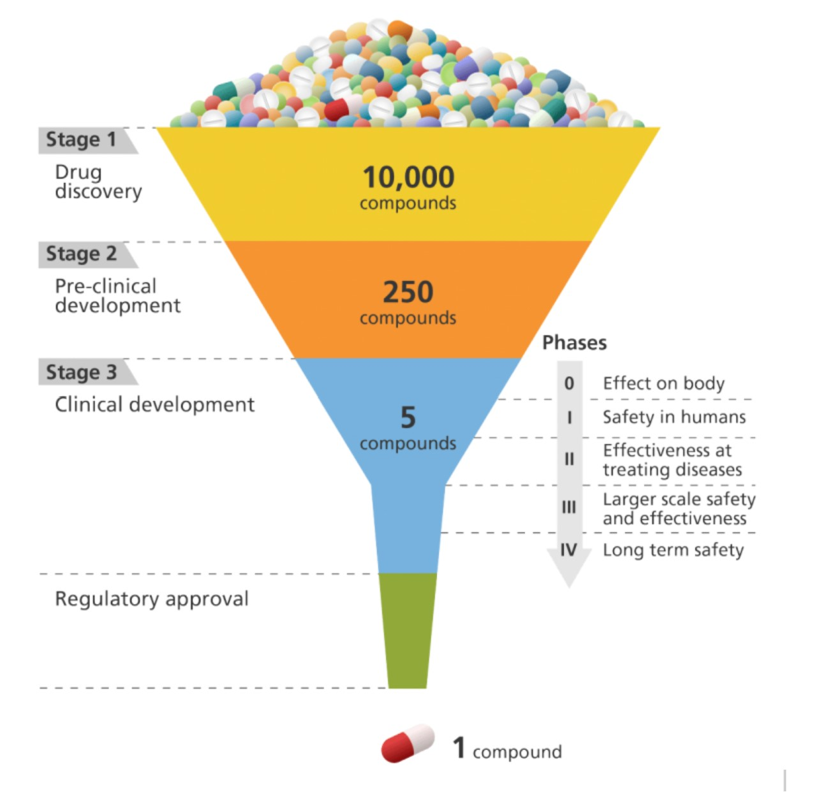
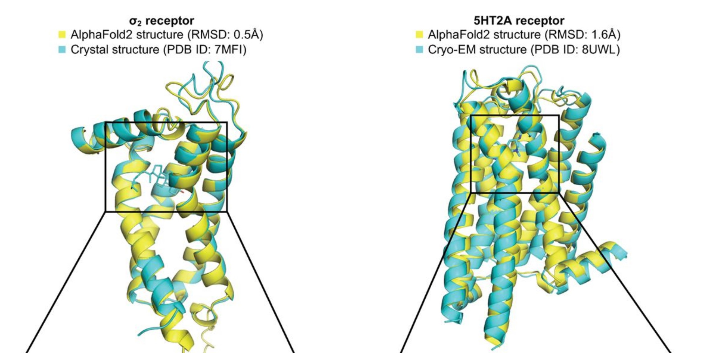
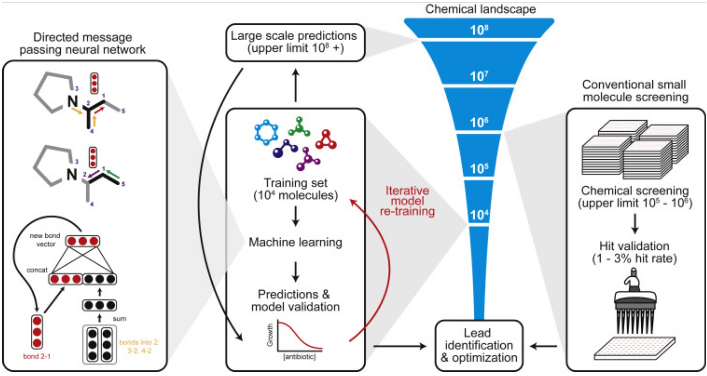
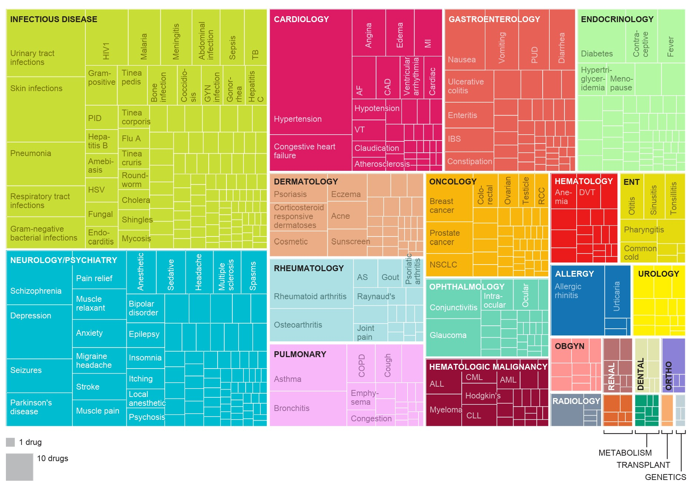

A Growing Threat
The WHO estimates that antimicrobial resistance (AMR) contributed to approximately 5 million deaths worldwide in 2019 (“Antimicrobial Resistance” 2023). In the USA, AMR results annually in 8 million additional days spent in the hospital and over $20 billion in healthcare costs (Bush et al. 2011). The problem will only grow in magnitude as antibiotic resistant genes in bacteria spread. AMR is compounded by the fact that development of new antibiotics has stalled over the past few decades. Historically, antibiotics were primarily discovered from natural products generated by soil microbes. This approach led to an initial burst of discoveries in the mid-20th century, but since then, soil screening has produced diminishing returns. Other antibiotics were created as derivatives of known antibiotics, but these have a limited ability to outpace antibiotic resistance (Randall and Davies 2021).

Developing new drugs is an expensive, time-consuming, and failure-prone process, with only a small percentage of potential drug candidates making it from discovery through clinical testing to regulatory approval. Antibiotic research has been particularly neglected due to unfavourable financial incentives. New antibiotics are typically only used if standard antibiotics fail, and antibiotics are given for a limited course. Thus, antibiotic research is not seen as profitable and pharmaceutical companies have largely avoided it (Durrant and Amaro 2015). Artificial intelligence holds promise for accelerating research to address this threat, although there are also limitations and risks.
Possibilities with Deep Learning
Machine learning uses data to find patterns, as opposed to relying on manually coded rules. Deep learning is a powerful family of machine learning algorithms, responsible for the recent breakthroughs in artificial intelligence. The field of has seen massive improvements in accuracy and speed, and reductions in cost. Key reasons for this progress are the affordability of GPUs (processors used in video gaming which can quickly perform numerical computations in parallel), increases in available data, and research advances in the underlying algorithms (LeCun, Bengio, and Hinton 2015).
Deep learning-assisted approaches to drug discovery offer a potentially faster and cheaper way to identify new antibiotic candidates. It is estimated that there are 1030–1060 potential drug-like chemicals; this scale means it is impossible to explore even a fraction of these (Melo, Maasch, and de la Fuente-Nunez 2021). Algorithms can help determine what compounds to prioritize.
Protein Folding Approaches with AI
AlphaFold has revolutionized protein structure prediction (Jumper et al. 2021, my summary here) and there has been interest in using it to aid in antibiotic discovery. Researchers applied AlphaFold to the essential proteins from E. coli (Wong et al. 2022). They then used molecular docking programs to predict if these sites would be able to bind with over 300 different existing drug compounds. When they tested the predictions experimentally in the lab, they found that accuracy was relatively low. One limitation of the approach is that AlphaFold does not differentiate between active vs. inactive conformations. The researchers highlighted the need for better scoring functions to accurately rank the binding poses and for benchmarking datasets to evaluate performance (Wong et al. 2022).

A more recent pre-print (not yet peer-reviewed) offered a potential explanation of AlphaFold’s poor performance on predicting existing drugs (Lyu et al. 2023, news coverage). The authors proposed that minor differences in structure may cause AlphaFold to miss existing drugs, but that it may be identifying equally promising ones. Starting with 2 known protein structures, the researchers used AlphaFold to virtually screen millions of potential drugs and then synthesized a few hundred of the most promising candidates. For comparison, they also followed a more traditional process to screen and synthesize drug candidates. Even though AlphaFold and the traditional process yielded completely different drug candidates, they had similar success rates of how many of the candidates bound to the proteins of interest as predicted (Lyu et al. 2023).
Predicting Antibacterial Activity with AI
Other work has not relied on protein structure prediction software like AlphaFold, but instead created deep learning models directly for the underlying problem. Researchers used training sets of thousands of small molecule drugs to build models predicting which will have antibacterial activity (Stokes et al. 2020; Liu et al. 2023). Message-passing neural networks, a type of deep learning model, allow for iteratively exchanging information between adjacent atoms and bonds. This captures some of the structural information of a protein, without explicitly predicting protein structure. A model was created using a dataset of thousands of repurposed drugs, and then applied to chemical libraries containing over 100 million molecules (Stokes et al. 2020). The output was a ranking of the most promising drug candidates based on predicted antibacterial activity, chemical structure, and availability. This approach predicted that Halicin, which is structurally distinct form existing classes of antibiotics, would be an effective drug. When tested empirically, Halicin demonstrated a broad-spectrum impact against bacteria including M. tuberculosis, carbapenem-resistant Enterobacteriaceae, C. difficile, and multi-resistant A. baumannii (Stokes et al. 2020).

A similar approach was used by the same lab to train a deep learning model to predict antibiotics that would be effective against multi-resistant Acinetobacter baumannii (Liu et al. 2023). The WHO has designated drug resistant A. baumannii as one of the highest priorities for urgent development of new antibiotics. The model discovered a new antibiotic drug, Aubacin, which is structurally distinct from existing classes of antibiotics. In a lab experiment, Aubacin was effective at supressing A. baumannii in a mouse wound. It was also effective when tested against 41 different strains of resistant A. baumannii from the CDC Antibiotic Resistant Isolation bank (Liu et al. 2023).
Data Sources and Tools
AI models are highly dependent on the data used to train them. Training data shapes the accuracy of a model, helps set what possibilities are considered, and determines the context in which it is appropriate to use. One useful data source is the Drug Repurposing Hub (Corsello et al. 2017), which contains a hand-curated collection of thousands of existing drugs, including ones where safety was established in clinical trials, but that never obtained regulatory approval. Applying existing drugs to new diseases other than that which they were originally developed for is a pragmatic approach that can have a rapid and lower-cost impact. Another useful tool is the ZINC15 database, which includes data on small molecules, including their biological activity and chemical properties (Sterling and Irwin 2015). Both the Drug Repurposing Hub and ZINC 15 databases have been used in neural network approaches (Stokes et al. 2020; Liu et al. 2023).

RDKit is an open-source library that can be used to compute molecular features. Some researchers use these computed features to augment the data gathered purely from existing structures and ligands, using one of the above databases together with RDKit-computed features as inputs to their models (Liu et al. 2023).
Risks and Limitations
The research described above of antibiotics discovered through deep learning-assisted processes is still in preliminary stages, with none of those drugs having yet begun clinical trials, much less reached regulatory approval. In other fields, machine learning models have sometimes performed well in testing but failed to work as expected when deployed in the real world (Sambasivan et al. 2021). Issues can arise when the context and quality of the training data is not fully understood (Gebru et al. 2021). ML systems are trained in clearly defined environments, while the physical world often has complex and volatile underlying phenomena, which are not fully accounted for during training. This can create a brittleness in ML-generated solutions. Moreover, there is a conflicting incentive system in which the creators of ML models are rewarded with prestige, but the arduous work used to gather and curate the data used to train those models is often neglected and taken for granted (Sambasivan et al. 2021).
However, given the urgency of the antimicrobial resistance crisis, it is important that we consider a variety of innovative solutions for tackling it. Deep learning can be a powerful tool, and approaches to antibiotic discovery should continue to be pursued.
You can subscribe to be notified of new blog posts by submitting your email below:
I look forward to reading your responses. Create a free GitHub account to comment below.